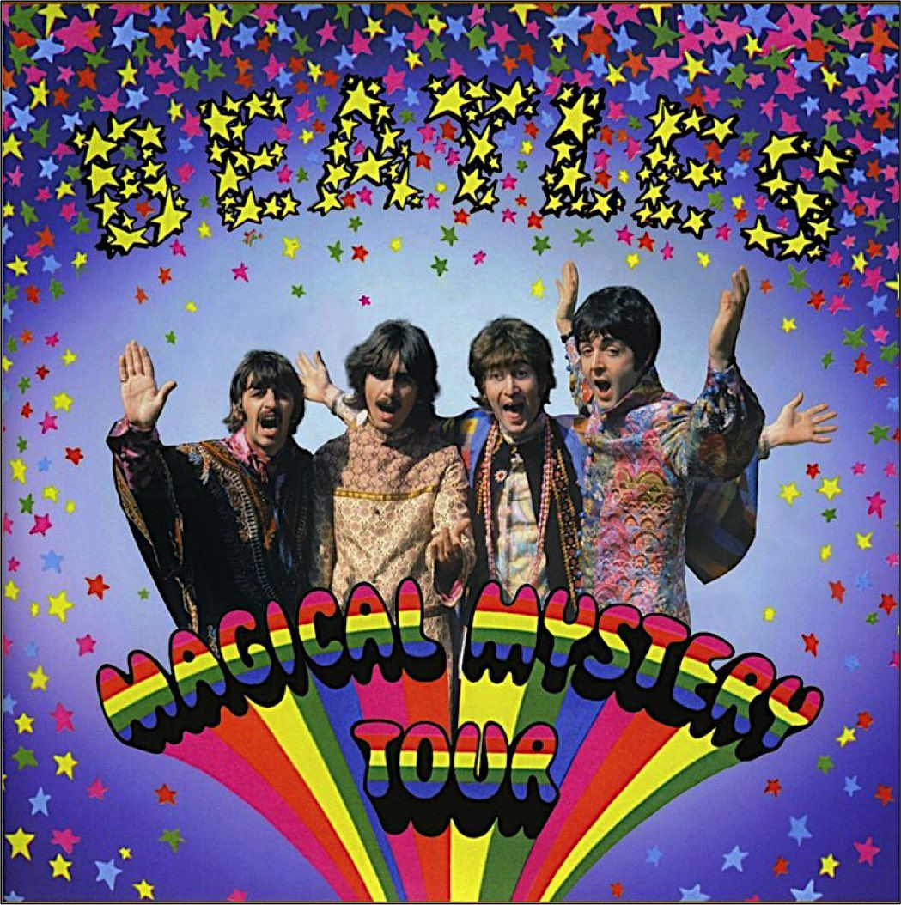
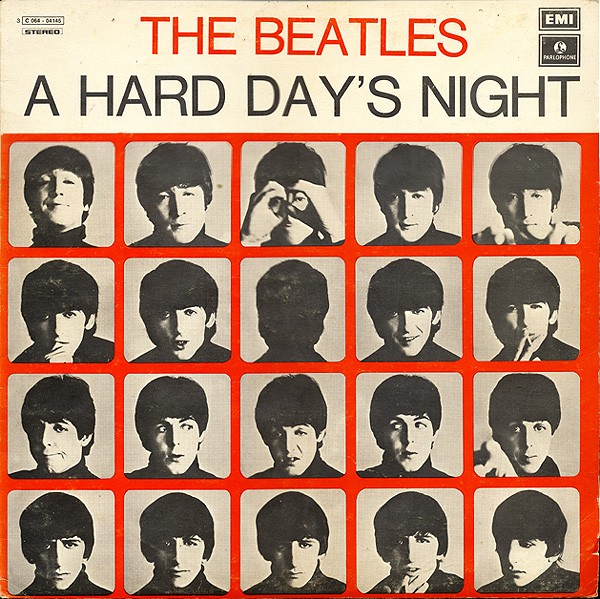
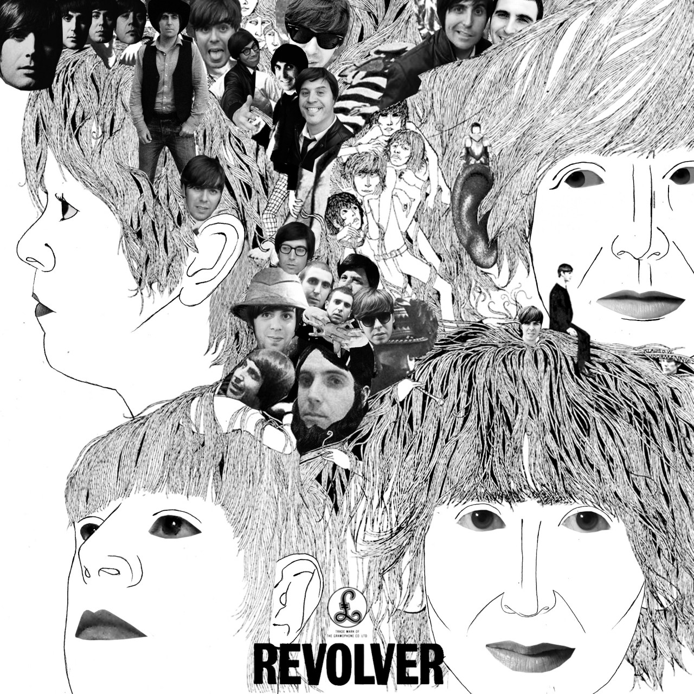
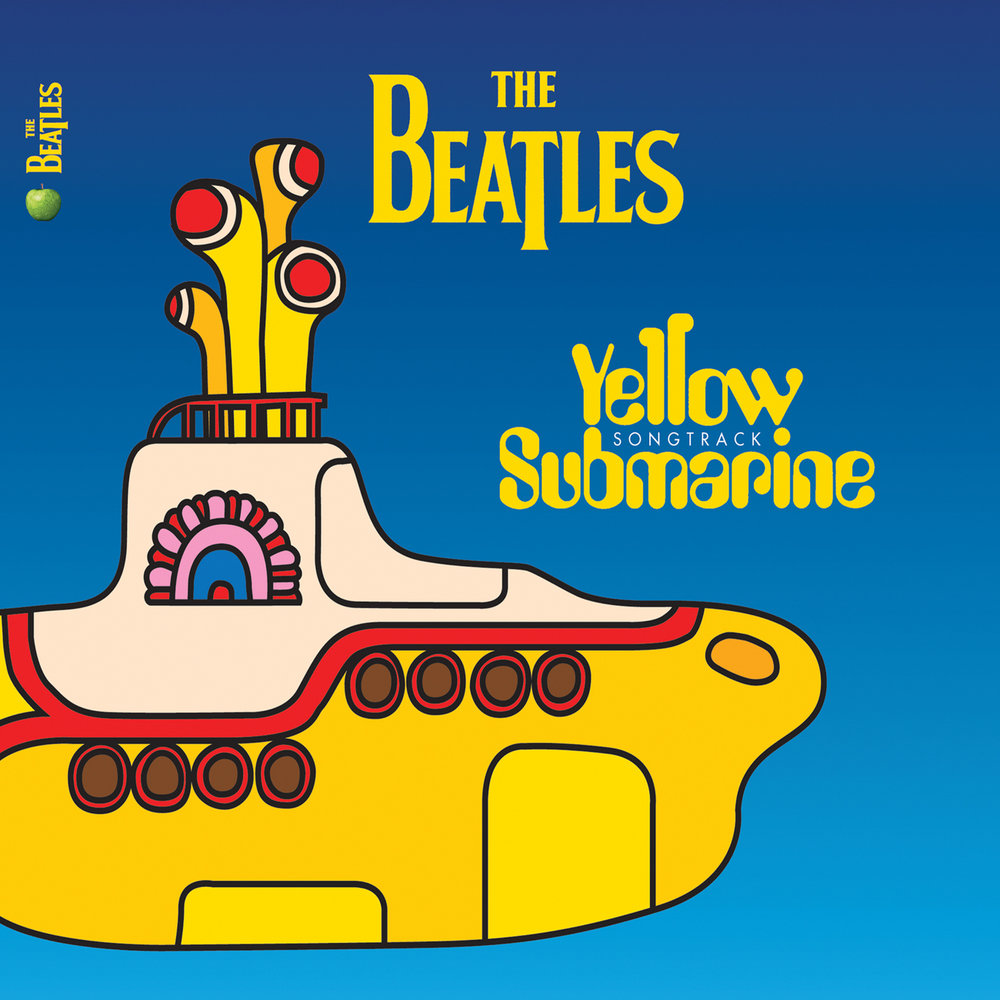

- «I Saw Her Standing There» Пол Маккартни 2:54
- «Misery» Джон Леннон и Пол Маккартни 1:50
- «Anna (Go to Him)» Джон Леннон 2:57
- «Chains» Джордж Харрисон 2:23
- «Boys» Ринго Старр 2:27
- «Ask Me Why» Джон Леннон 2:27
- «Please Please Me» Джон Леннон 1:59
- «Love Me Do» Пол Маккартни и Джон Леннон 2:18
- «P.S. I Love You» Пол Маккартни 2:05
- «Baby It’s You» Джон Леннон 2:38
- «Do You Want to Know a Secret?» Джордж Харрисон 1:59
- «A Taste of Honey» Пол Маккартни 2:05
- «There’s a Place» Джон Леннон и Пол Маккартни 1:52
- «Twist and Shout» Джон Леннон 2:32
- Please Please Me Скачать
- With The Beatles Скачать
- A Hard Day's Night Скачать
- Beatles For Sale Скачать
- Help! Скачать
- Rubber Soul Скачать
- Revolver Скачать
- Sgt. Pepper's Lonely Hearts Club Band Скачать 
- Magical Mystery Tour Скачать
- The Beatles Скачать
- Yellow Submarine Скачать
- Abbey Road Скачать
- Let It Be Скачать
1963


1964
1965


1966
1967

1968
1969
1970